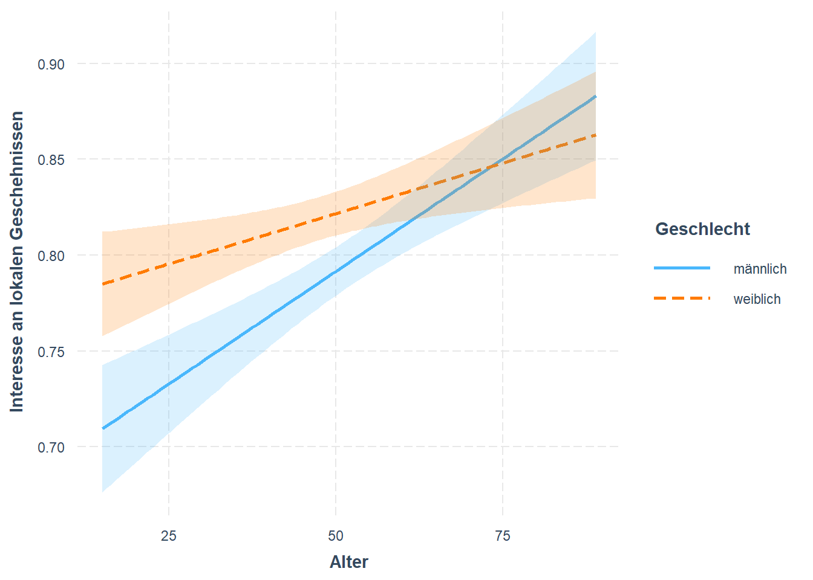
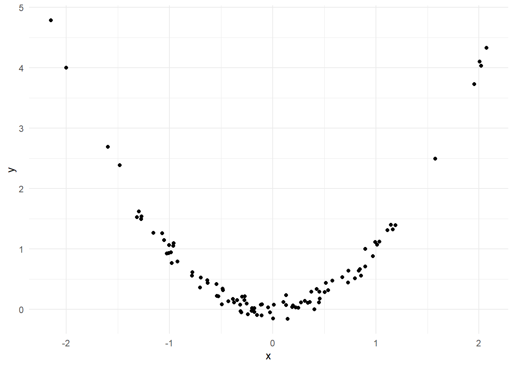
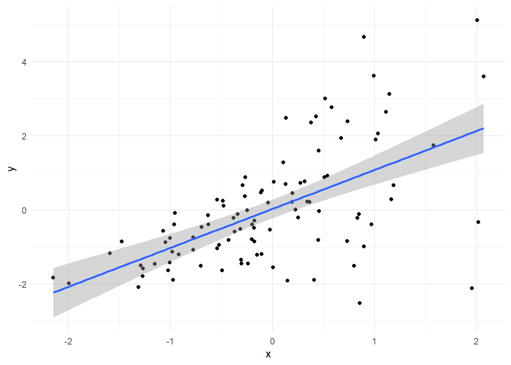
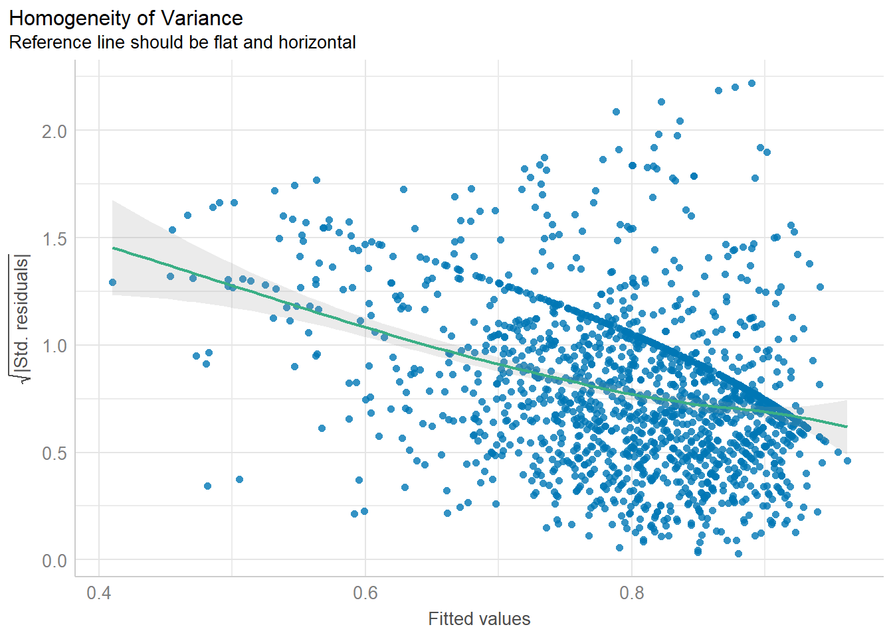
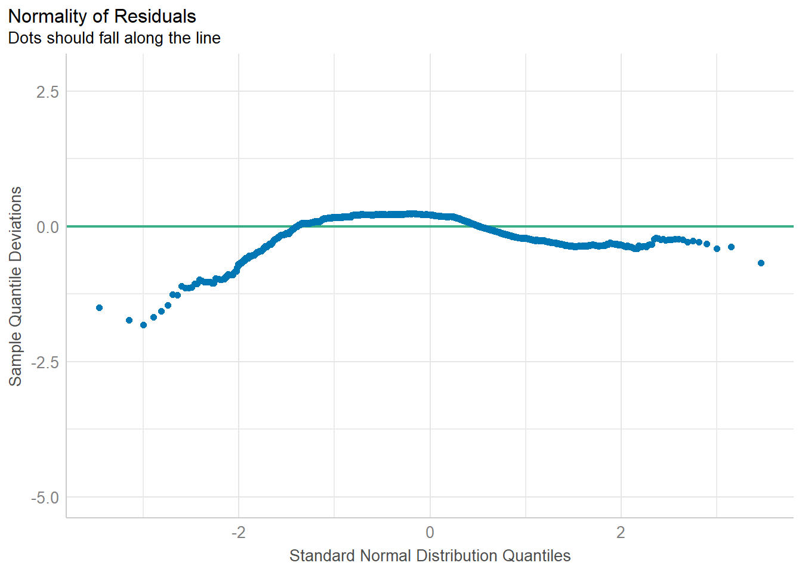
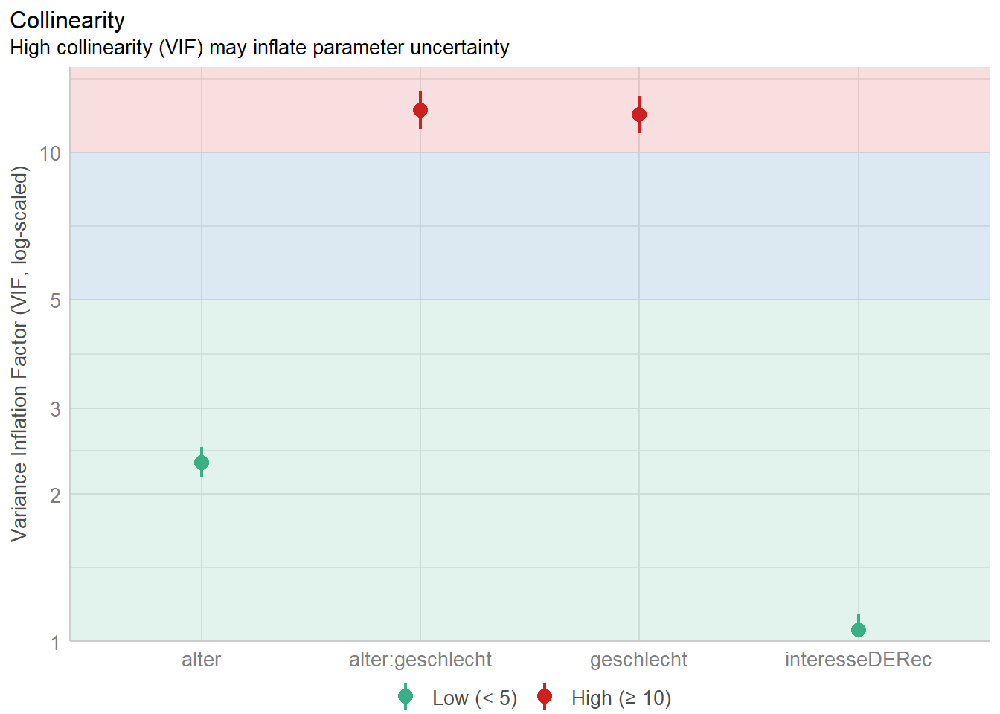

In diesem Kapitel werden wir auf den Inhalten des letzten Kapitels aufbauen.
Zum einen haben wir bisher nur metrische Prädiktoren kennengelernt, allerdings auch festgealten, dass es kein vorgeschriebenes Datenniveau für die unabhängigen Variablen gibt. Entsprechend werden wir uns hier ansehen, wie wir den Einfluss von kategorialen und insb. nominalen Variablen untersuchen können.
Des Weiteren haben wir uns bisher nur mit einfachen Effekten von unabhängigen Variablen beschäftigt. Was aber, wenn der Einfluss einer Variable von einer anderen Variable abhängig ist? In diesem Fall können wir sogenannte Interaktionseffekte berechnen, die wir uns in diesem Kapitel ansehen werden.
Abschließend werden wir noch einen Blick auf die Voraussetzungen von Regressionen werfen und wann bzw. wie Sie diese überprüfen können.
9.1 Vorbereitung
Wir starten wider damit, unsere R-Umgebung vorzubereiten, indem wir das tidyverse und das Paket effectsize laden, den Datensatz einlesen und die Optionen so ändern, dass kleine Zahlen in einem uns gewohnten Format angezeigt werden.
# Lädt das tidyverselibrary(tidyverse)
── Attaching core tidyverse packages ──────────────────────── tidyverse 2.0.0 ──
✔ dplyr 1.1.4 ✔ readr 2.1.5
✔ forcats 1.0.0 ✔ stringr 1.5.1
✔ ggplot2 3.5.1 ✔ tibble 3.2.1
✔ lubridate 1.9.3 ✔ tidyr 1.3.1
✔ purrr 1.0.2
── Conflicts ────────────────────────────────────────── tidyverse_conflicts() ──
✖ dplyr::filter() masks stats::filter()
✖ dplyr::lag() masks stats::lag()
ℹ Use the conflicted package (<http://conflicted.r-lib.org/>) to force all conflicts to become errors
# Lädt effectsizelibrary(effectsize)# Liest die Daten eindf_lokal <-read.csv("Daten/lokalkommunikation.csv")# Stellt ein, dass sehr kleine Zahlen normal dargestellt werdenoptions(scipen =999)
Wir verwenden wieder einige Spalten, die Sie mittlerweile kennen. Auf die entsprechenden Transformationen gehen wir daher nicht erneut ein. Die einzige Änderung zu vorherigen Versionen dieser Transformationen ist, dass wir beim Geschlecht auch den Wert “divers” als fehlend deklarieren. Das liegt ganz einfach daran, dass wir nur sehr wenige Fälle in dieser Gruppe haben und die Interpretation dadurch für dieses Beispiel unnötig kompliziert wird.
# Benennt die Spalten A202_01 und A202_02 umdf_lokal <- df_lokal |>rename(interesseLokal = A202_01,interesseDE = A202_02,geburtsjahr = A601_01)# Transformiert die Spalten so, dass sie Werte von 0 bis 1 statt 1 bis 101 enthalten.df_lokal <- df_lokal |>mutate(interesseLokalRec = (interesseLokal-1)/100,interesseDERec = (interesseDE-1)/100)# Transfomiert das Geburtsjahr zum Alter. Siehe Kapitel 3 für Detailsdf_lokal <- df_lokal |>mutate(alter =str_trim(geburtsjahr)) |>mutate(geburtsjahr =str_sub(geburtsjahr, -4)) |>mutate(geburtsjahr =as.integer(geburtsjahr)) |>mutate(geburtsjahr =ifelse(geburtsjahr <1000, geburtsjahr+1000, geburtsjahr)) |>mutate(alter =2022- geburtsjahr)
Warning: There was 1 warning in `mutate()`.
ℹ In argument: `geburtsjahr = as.integer(geburtsjahr)`.
Caused by warning:
! NAs durch Umwandlung erzeugt
# Erstellt eine neue Spalte aus der Geschlechtsabfrage. Erst werden die Werte "keine Angabe" und "divers" als fehlend deklariertm dann wird ein Faktor mit den übrigen Kategorien erstelltdf_lokal <- df_lokal |>mutate(geschlecht =ifelse(A602 ==3| A602 ==4, NA, A602)) |>mutate(geschlecht =factor(geschlecht, labels =c("männlich", "weiblich")))
9.2 Multiple Regressionen mit nominalem Prädiktor
Grundsätzlich können wir nominale Prädiktoren ganz normal dem Regressionsmodell hinzufügen, wie wir es auch bei den metrischen Prädiktoren gemacht haben. Schauen wir uns das einmal an, indem wir die Regression aus dem letzten Kapitel um das Geschlecht als UV erweitern:
# Berechnet eine Regression mit dem Interesse an lokalen Geschehnissen als AV und dem Alter, dem Interesse an Geschehnissen in Deutschland und dem Geschlecht als UVslmInteresseLokal <-lm(interesseLokalRec ~ alter + interesseDERec + geschlecht, data = df_lokal)# Zeigt die Ergebnisse der Regression ansummary(lmInteresseLokal)
Call:
lm(formula = interesseLokalRec ~ alter + interesseDERec + geschlecht,
data = df_lokal)
Residuals:
Min 1Q Median 3Q Max
-0.89442 -0.07994 0.03707 0.10846 0.50426
Coefficients:
Estimate Std. Error t value Pr(>|t|)
(Intercept) 0.4019646 0.0209543 19.183 < 0.0000000000000002 ***
alter 0.0016333 0.0002896 5.639 0.0000000198 ***
interesseDERec 0.3880690 0.0210399 18.444 < 0.0000000000000002 ***
geschlechtweiblich 0.0300721 0.0086718 3.468 0.000537 ***
---
Signif. codes: 0 '***' 0.001 '**' 0.01 '*' 0.05 '.' 0.1 ' ' 1
Residual standard error: 0.1811 on 1791 degrees of freedom
(51 Beobachtungen als fehlend gelöscht)
Multiple R-squared: 0.199, Adjusted R-squared: 0.1977
F-statistic: 148.4 on 3 and 1791 DF, p-value: < 0.00000000000000022
Wie Sie sehen, haben wir nun eine neue Zeile in der Tabelle über die Effekte, die mit geschlechtweiblich betitelt ist. Die Zeile gibt an, inwiefern sich die abhängige Variable (also das Interesse an loklaen Geschehnissen) ändert, wenn eine befragte Person nicht männlich, sondern weiblich ist. D.h., der positive Effekt in der Zeile geschlechtweiblich bedeutet, dass Frauen ein höheres Interesse an lokalen Geschehnissen haben als Männer.
Außerdem ändert sich beim Einschluss von kategorialen Prädiktoren die Interpretation der Regressionskontante (Intercept). Im letzten Kapitel haben wir gelernt, dass dieser Wert dem durchschnittlichen Wert der abhängigen Variable entspricht, wenn alle unabhängigen Variablen den Wert 0 annehmen. Das ist grundsätzlich auch weiterhin der Fall, allerdings müssen wir nun beachten, dass dieser Wert nur noch dem Durchschnitt der Männer in der Stichprobe entspricht. Man sagt auch, dass es sich bei der Ausprägung männlich um die Referenzkategorie der Variable geschlecht handelt. Am einfachsten erkennen Sie das daran, dass oben in der Tabelle für die Effektstärke die andere Ausprägung (also “weiblich”) aufgeführt sind.
Werfen wir als nächstes einen Blick auf die standardisierten Effektstärken:
# Zeigt den standardisierten Koeffizienten beta für die Prädiktoren anstandardize_parameters(lmInteresseLokal)
Wir sehen einerseits, dass sich die Effektstärken des Alters und des Interesses an Geschehnissen in Deutschland im Vergleich zum Modell aus dem letzten Kapitel leicht geändert haben. Andererseits sehen wir nun auch eine Zeile für den Effekt der Variable geschlecht. Im Video im letzten Kapitel hatten wir festgehalten, dass standardisierte Effekte nur für metrische Prädiktoren sinnvoll angegeben werden können, da sie angeben, um wie viele Standardabweichungen sich die abhängige Variable ändert, wenn sich die entsprechende unabhängige Variable um eine Standardabweichung erhöht. Was bedeutet dieser Effekt also nun? Für nominale Variablen gibt die Funktion weiterhin aus, wie sich die abhängige Variable verändert, wenn sich die nominale Variable um eine Einheit erhöht bzw. verändert (also z.B. weiblich statt männlich). Der Unterschied zur Tabelle der Koeffiziente aus der summary()-Funktion besteht darin, dass die Veränderung hier jetzt nicht mehr einer Veränderung in den Rohdaten entspricht, sondern in Standardabweichungen ausgedrückt wird. Oder anders gesagt: verglichen mit Männern haben Frauen ein um 0,15 Standardabweichungen höheres Interesse an lokalen Geschehnissen.
Beachten Sie, dass Sie beim Berichten von diesem Effekten ein bisschen Vorsicht walten lassen müssen. Wenn Sie ansonsten nur nicht-standardisierte Effekte berichten, haben Sie zwar kein Problem mit nominalen Prädiktoren, aber möglicherweise sind Ihre Ergebnisse dann etwas schwerer verständlich. Wenn Sie aber alle Effekte von metrischen Variablen in standardisierter Form ausdrücken, sollten Sie Ihren Leserinnen und Lesern unmissverständlich klar machen, dass sich die standardisierung bei den Effekten von nominalen Prädiktoren nur auf die abhängige Variable bezieht.
Ordinale Prädiktoren
Grundsätzlich können Sie ordinale Prädiktoren genauso behandeln wie nominale Prädiktoren. Sollte die ordinale Variable aber viele Ausprägungen haben (z.B. über 10 verschiedene Einkommensgruppen), wird die Interpretation der Ergebnisse schnell sehr komplex. In solchen Fällen kann es sinnvoll sein, entweder die Anzahl der Ausprägungen zu reduzieren (z.B. zu geringen, mittleren und hohen Einkommen) oder die Variable als quasi-metrisch zu behandeln. Sein Sie hierbei aber sehr vorsichtig bei der Interpretation!
9.3 Interaktionseffekte
9.3.1 Was sind Interaktionseffekte?
Oben im Kapitel haben wir bereits erfahren, dass Interaktionseffekt im Prinzip nichts anderes bedeutet, als dass der Effekt einer Variable von einer anderen abhängig ist. Stellen Sie sich z.B. vor, dass Sie herausfinden möchten, ob das Schauen eines Films mit Alterfreigabe FSK 16 einen Effekt auf die Stimmung von unter 16-Jährigen am nächsten Tag hat. Um den elterlichen Einfluss zu kontrollieren, erheben Sie auch, ob die Eltern im Anschluss an den Film mit ihren Kindern über das Gesehene gesprochen haben. Ein klassischer Interaktionseffekt würde dann vorliegen, wenn Sie zwar einen negativen Effekt des Films auf die Stimmung finden, aber nur in den Fällen, in denen kein Anschlussgespräch stattgefunden hat, wohingegen Kinder, die mit ihren Eltern über den Film gesprochen haben, entweder eine unveränderte oder sogar bessere Stimmung am nächsten Tag aufweisen.
Mathematisch funktionieren Interaktionseffekte so, dass das Produkt der beiden Variablen in das Modell aufgenommen wird.
9.3.2 Interaktionseffekte berechnen
Um einen Interaktionseffekt von zwei Variablen zu berechnen, müssen wir nur die Gleichung in unserem Aufruf der lm()-Funktion etwas anpassen. Statt zwei Prädiktoren mit einem + zu verbinden, können wir sie mit einem * verbinden. Das Resultat sehen Sie hier:
# Berechnet eine Regression mit dem Interesse an lokalen Geschehnissen als AV und dem Alter, dem Interesse an Geschehnissen in Deutschland und dem Geschlecht als UVs. Dabei wird ein Interaktionseffekt zwischen Alter und Geschlecht angenommen.lmInteraktion <-lm(interesseLokalRec ~ alter*geschlecht + interesseDERec, data = df_lokal)# Zeigt die Ergebnisse der Regression ansummary(lmInteraktion)
Call:
lm(formula = interesseLokalRec ~ alter * geschlecht + interesseDERec,
data = df_lokal)
Residuals:
Min 1Q Median 3Q Max
-0.89015 -0.08269 0.03840 0.10593 0.49950
Coefficients:
Estimate Std. Error t value Pr(>|t|)
(Intercept) 0.3654555 0.0263466 13.871 < 0.0000000000000002 ***
alter 0.0023459 0.0004257 5.510 0.0000000411 ***
geschlechtweiblich 0.0948118 0.0296693 3.196 0.00142 **
interesseDERec 0.3874885 0.0210168 18.437 < 0.0000000000000002 ***
alter:geschlechtweiblich -0.0012933 0.0005669 -2.281 0.02264 *
---
Signif. codes: 0 '***' 0.001 '**' 0.01 '*' 0.05 '.' 0.1 ' ' 1
Residual standard error: 0.1809 on 1790 degrees of freedom
(51 Beobachtungen als fehlend gelöscht)
Multiple R-squared: 0.2014, Adjusted R-squared: 0.1996
F-statistic: 112.8 on 4 and 1790 DF, p-value: < 0.00000000000000022
In der Tabelle aus der summary()-Funktion sehen wir jetzt, dass die Effekte des Alters und des Geschlechts (weiblich vs. männlich) weiterhin positiv sind. Diese beiden Effekte werden auch als Haupteffekte der beiden Variablen bezeichnet. Wichtig ist, dass diese Effekte in Anwesenheit einer signifikanten Interpretation mit äußester Vorsicht interpretiert werden sollten! Schließlich wissen Sie dann schon, dass die Effekte von der jeweils anderen Variable abhängig sind.
Die neue Zeile ganz unten (alter:geschlechtweiblich) zeigt den Interaktionseffekt an, der negativ und signifikant ist. Das bedeutet, Frauen haben zwar insgesamt ein höheres Interesse an lokalen Geschehnissen als Männer und ältere Menschen haben ein höheres Interesse als jüngere Menschen, aber je älter die Frauen werden, desto geringer ist ihr Interesse im Vergleich zu älteren Männern.
Zugegebenermaßen ist diese Interpretation nicht ganz offensichtlich. Bei der Einordnung hilft, sich ins Gedächtnis zu rufen, dass die Effekte immer aussagen, wie sich die abhängige Variable verändert, wenn wir die Werte der unabhängigen Variablen einzeln ändern. Also konkret: der positive Effekt des Alters sagt aus, dass ältere Menschen ein überdurchscnittliches Interesse an lokalen Geschehnissen haben, wenn alle anderen Variablen konstant gehalten werden. Gleiches gilt für Frauen vs. Männer. Der Interaktionseffekt sagt nun aus, wie sich das Interesse verändert, wenn eine Person weiblich statt männlich ist und älter statt jünger. Wir ändern also beide Variablen gleichzeitig und halten nur noch das Interesse an Geschehnissen in Deutschland konstant.
Der Vollständigkeit halber lassen wir uns auch noch die standardisierten Effektstärken anzeigen:
# Zeigt den standardisierten Koeffizienten beta für die Prädiktoren anstandardize_parameters(lmInteraktion)
Eine einfache Möglichkeit, Interaktionseffekte zu verstehen ist, sie zu visualisieren. Dazu nutzen wir die Funktion interact_plot() aus dem Paket interactions, das wir zunächst noch installieren müssen.
Die Funktion erstellt basierend auf ggplot() eine Grafik, nimmt uns dabei aber viel manuelle Arbeit ab. Der Nachteil ist, dass wir etwas weniger Möglichkeiten haben, die Grafik individuell anzupassen.
Grundsätzlich reicht es, der Funktion einige wenige Argumente zu übergeben:
Das Modell, das wir zuvor mit lm() geschätzt haben.
Den Prädiktor, den wir auf der x-Achse darstellen wollen. Das Argument heißt pred. Hier nehmen wir das Alter.
Den Moderator, den wir im Argument modx angeben. Hier also das Geschlecht.
Außerdem geben wir einige weitere Argumente an, durch die das Resultat noch etwas besser wird:
Durch interval = TRUE können wir Konfidenzintervalle einzeichnen, wodurch die mit der Schätzung verbundene Unsicherheit visualisiert wird.
Mit x.label und y.label können wir die Achsen manuell beschriften.
Mit legend.main können wir den Titel der Legende anpassen.
# Versucht das Paket "interactions" zu laden. Falls es nicht installiert ist, wird es erst installiert und dann geladenif(!require(interactions)){install.packages("interactions")library(interactions)}
Lade nötiges Paket: interactions
Warning: Paket 'interactions' wurde unter R Version 4.4.2 erstellt
# Erstellt das Objekt "plotInteraktion", in dem die Interaktion visualisiert wirdplotInteraktion <-interact_plot(lmInteraktion, pred = alter, modx = geschlecht, interval =TRUE, x.label ="Alter", y.label ="Interesse an lokalen Geschehnissen", legend.main ="Geschlecht")# Zeigt die Grafik anplotInteraktion

Die Grafik zeigt nun relativ eindeutig, dass jüngere Frauen ein deutlich höheres Interesse haben als jüngere Männer. Dafür ist der Effekt für Männer dann stäker, sprich, die Gerade ist deutlich steiler. Daraus resltiert dann, dass ältere Männer ein etwas höheres Interesse an lokalen Geschehnissen haben, wobei sich die beiden Gruppen im hohen Alter nur noch geringfügig unterscheiden.
9.4 Voraussetzungen
In diesem Teil wird es zwsichendurch ziemlich komplex, daher vorab das für Sie Wichtigste: Die meisten Voraussetzungen von Regressionen können wir in den meisten Fällen ignorieren! Lesen Sie die ersten beiden Aufmerksam durch, auch Nummer 3 ist noch gut zu wissen. Alles danach sollten Sie auch lesen, aber machen Sie sich keine Sorgen, wenn Sie dabei nicht mehr ganz mitkommen. Fragen dürfen Sie natürlich trotzdem immer!
9.4.1 Welche Voruassetzungen haben Regressionen?
Schauen wir uns abschließend an, welche Voraussetzungen die Regressionsanalyse hat. Vorweg: Dieser Teil kann etwas abschreckend sein, aber die gute Nachricht ist, dass es in vielen Fällen reicht, die Voraussetzungen im Hinterkopf zu haben. Und noch ein Disclaimer: Dieser Teil basiert in weiten Teilen auf Kapitel 11.1 auf einem Lehrbuch von Gelman, Hill und Vethari, das online verfügbar ist.
Die zwei wichtigsten Voraussetzungen haben relativ wenig mit der eigentlichen Statistik zu tun:
Die Daten müssen valide sein. Der Begriff ist Ihnen wahrscheinlich schon aus dem Studium bekannt. Wir verstehen darunter die Frage, ob die Daten (bzw. die Datenerhebung) wirklich das Messen, was sie messen sollen. Im Kontext von Regressionen (und den anderen Verfahren, die wir noch kennenlernen werden!) bedeutet es aber auch, dass unser Modell als Ganzes eine gute Repräsentation des zu untersuchenden Sachverhalts sein sollte. Ganz konkret sollten z.B. alle relevanten Prädiktoren berücksichtigt werden. Das ist in der Praxis gar nicht immer so einfach, allein schon deshalb, weil oftmals vor der Datenerhebung gar nicht klar ist, welche Konstrukte relevat sein könnten. Aber es ist immer gut, diese Frage im Hinterkopf zu haben und ggf. bei der Interpretation der Ergebnisse zu berücksichtigen.
Immer, wenn wir eine Regression berechnen, versuchen wir basierend auf Daten einer Stichprobe Schlüsse über eine Grundgesamtheit zu ziehen. Damit diese Schlüsse zulässig sind, müssen unsere Daten repräsentativ sein. Wichtig ist, dass für die Regression nicht die Stichprobe selbst ein repräsentatives Abbild der Grundgesamtheit sein muss, sondern vielmehr die gemessene Verteilung der abhängigen Variable, die in Abhängigkeit der aller unabhänggen Variablen der Grundgesamtheit entsprechen muss. Wenn wir beispielsweise die Größe von Befragten durch ihr Geschlecht und ihre Ernährungsgewohnheiten während der Kindheit erklären wollen, wäre es völlig in Ordnung, wenn Frauen oder vegan ernährte Kinder überrepräsentiert wären. Allerdings hätten wir ein Problem, wenn überdurchschnittlich viele große Menschen in unserer Stichprobe enthalten wären. Ein Problem, dass wir in diesem Kontext immer mal wieder haben ist, dass es schwer bis unmöglich sein kann, die Grundgesamtheit überhaupt zu bestimmen. Das ist z.B. immer dann der Fall, wenn Sie Ihre Stichprobe über persönliche Kontakte und/oder soziale Medien rekrutieren. Allen Ergebnissen, die Sie berechnen, liegt dann die Annahme zu Grunde, dass die gemessenen Daten auf die Grundgesamtheit, an der Sie interessiert sind, übertragbar sind.
Daneben gibt es einige Voraussetzungen, die auch im strengeren Sinne statistischer Natur sind.
Regressionsmodell müssen linear sein. Darüber haben wir bereits im Kontext von Korrelationen gesprochen. Sollten Sie z.B. einmal einen solchen Zusammenhang sehen, können Sie relativ leicht erkennen, dass es sich nicht um einen linearen Zusammenhang handelt. In diesem Fall würden wir eher von einem quadratischen Zusammenhang sprechen. In solchen Fällen haben Sie zwei Möglichkeiten: Entweder Sie transformieren eine der Variablen (üblicherweise die unabhängige Variable) oder sie wählene ein anderes Verfahren (das Sie in dieser Veranstaltung allerdings nicht lernen).

Die Effekte in Regressionsmodellen müssen additiv sein. Das heißt, wir gehen davon aus, dass die abhängige Variable am besten dadurch erklärt werden kann, dass wir die unabhängigen Variablen addieren, also nach dem Schema: y = x + z. Das ist eine durchaus starke Annahme. Genauso gut wäre es schließlich denkbar, dass die abhängige Variable das Ergebnis des Produkts von zwei Variablen ist, also: y = x*z. In der Realität kann das schwer zu erkennen sein, aber zum Glück können wir es relativ leicht berücksichtigen. Schließlich haben wir oben festgestellt, dass eine Interaktion nichts anderes ist, als das Produkt von zwei Prädiktoren.
Die Schätzfehler (oder Residuen) müssen unabhängig voneinander sein. Das bedeutet, dass die Abweichung eines gemessenen Wertes vom in der Regression geschätzen Wert in einem Fall (also z.B. einem ausgefüllten Befragungsbogen) keinen Einfluss auf die Abweichung in einem anderen Fall (also einem anderen ausgefüllten Fragebogen) haben darf. In den aller meisten Fällen können Sie davon ausgehen, dass diese Voraussetzung erfüllt ist. In anderen Fällen ist es dagegen sehr offensichtlich, dass dies nicht der Fall ist, z.B. wenn Sie dieselben Personen immer wieder befragen und davon ausgehen müssen, dass die Antworten aus der ersten Befragungswelle und die Antworten aus der zweiten Welle nicht unabhängig voneinander sind. In anderen Fällen entsteht eine Abhängigkeit durch das Erhebungssetting. Wenn Sie beispielsweise mehrere Schulklassen untersuchen, ist es gut möglich, dass die Daten aus den jeweiligen Klassen nicht unabhängig voneinander sind, etwa weil die zuständige Lehrkraft einen Einfluss ausübt. In solchen Fällen sollten Sie keine Regression anwenden.
Die Schätzfehler sollten eine gleichmäßige Streuung aufweisen. Das bedeutet, dass die durchschnittliche Abweichung der gemessenen Werte von den im Modell geschätzten Werten unabhängig davon sein sollte, welchen Wert ein Prädiktor hat. Im Bild unten sehen Sie, wie das aussehen könnte: Je kleiner die Werte von x, ddesto näher liegen sie, im Durchschnitt, an der Linie. Die höheren Werte sind dagegen deutlich weiter um die Linie herum gestreut. Man spricht in so einem Fall auch von Heteroskedastizität. Die gute Nachricht ist, dass Sie sich nicht wirklich um Heteroskedastizität sorgen müssen, sofern Sie nur daran interessiert sind, gemessene Daten zu erklären und nicht das Ziel haben, Werte zu prognostizieren bzw. vorherzusagen.

Die Schätzfehler sollten normalverteilt sein. In der Ausgabe der summary()-Funktion haben wir im letzten Kapitel kurz über die Zusammenfassung der Residuen gesprochen. Wie Sie dort sehen, werden Minimal- und Maximalwerte sowie Quartile und der Median dort abgebildet. Was dort leider nicht steht, sind Mittewert und Standardabweichung der Schätzfehler, die wir aber händisch berechnen könnten (aber zum Glück nur sehr selten müssen!). Was wir aber grundsätzlich aus der Angabe lernen ist, dass diese Schätzfehler irgendwie verteilt sind. Und diese Verteilung sollte normal sein, also durch eine Glockenkurve beschrieben werden können. Diese Voraussetzung wird in manchen Lehrbüchern und Online-Ressourcen fälschlicherweise angegeben als Normalverteilung der abhängigen Variable. Das ist nicht der Fall! Die Regression stellt keinerlei Anforderungen daran, wie diese Variable verteilt sein muss. Und es wird noch besser: Wie im Fall der Heteroskedastizität ist diese Voraussetzung nicht wirklich relevant, wenn Sie nur erhobene Daten erklären wollen und keine Vorhresagen basierend auf Ihrem Modell treffen wollen!
Die unabhängigen Varialen sollten nicht (zu stark) korrelieren. Man spricht hier auch von einer möglichst geringen Kollinearität oder auch Multikollinearität. Liegt diese vor, also korrelieren die Prädiktoren stark miteinander, ist die Schätzung der Effektstärken mit mehr Unsicherheit verbunden, d.h., die Standardfehler und darauf basierend die Konfidenzintervalle werden größer. Das ergibt auch irgendwie Sinn, wenn man mal darüber nachdenkt: Eine Korrelation bedeutet am Ende nichts anderes, als dass zwei Variablen dieselben Informationen enthalten. Je mehr Sie über die eine wissen, desto mehr wissen Sie bei einer starken Korrelation auch über die andere. Wenn Sie nun hergehen wollen und basierend auf zwei stark korrelierenden Variablen eine abhängige Variable erklären wollen, gibt es schlicht keine Möglichkeit, mit Sicherheit zu sagen, welche der beiden Variablen für einen etwaigen Effekt verantwortlich ist. Die Schätzung enthält also viel Unsicherheit. Das muss aber nicht unbedingt ein Problem sein, sondern ist ein völlig legitimes Forschungsergebnis! Im Spezialfall von Interaktionseffekten würden wir sogar mit einer hohen Kollinearität rechnen und brauchen uns darum keine Sorgen zu machen. Nur in sehr seltenen Fällen kann es vorkommen, dass eine Regression aufgrund sehr starker Multikollinearität nicht geschätzt werden kann. In solchen Fällen müssten Sie dann eine der Variablen aus dem Modell ausschließen.
9.4.2 Überprüfen der Voraussetzungen
Wie oben angedeutet, reicht es in den allermeisten Fällen, die Voraussetzungen im Hinterkopf zu haben. Falls Sie doch einmal in die Situation geraten, einzelne Voraussetzungen überprüfen zu wollen, können Sie dafür das performance-Paket nutzen.
# Versucht das Paket "performance" zu laden. Falls es nicht installiert ist, wird es erst installiert und dann geladenif(!require(performance)){install.packages("performance")library(performance)}
Lade nötiges Paket: performance
Dieses Paket enthält eine Vielzahl von Funktionen, mit denen Sie Regressionsmodelle überprüfen können. Das Schema ist dabei immer gleich: Sie müssen der entsprechenden Funktion lediglich berechnete Modell übergeben. Oftmals bietet es sich an, dabei visuell vorzugehen und die Funktionen innerhalb von plot() aufzurufen. Hier einige Beispiele. Fangen mit der Heteroskedastizität an:
# Überprüft, ob Heteroskedastizität vorliegt und stellt das Ergebnis visuell darplot(check_heteroscedasticity(lmInteraktion))

Hier sehen wir die Streuung der Schätzfehler. Freundlicherweise sagt uns die Funktion, wie das Ergebnis aussehen sollte. So erkennen wir gleich, dass wir die Voraussetzung nicht erfüllen. Aber da wir keine Vorhersagen treffen wollen, ist das nicht so schlimm.
Weiter geht es mit der Normalverteilung der Residuen:
# Überprüft, ob die Residuen normalverteilt sind und stellt das Ergebnis darplot(check_normality(lmInteraktion))
For confidence bands, please install `qqplotr`.

Zum selben Resultat gelangen wir hier. Die Funktion sagt uns, dass die Punkte der Linie folgen sollten, was allerdings nicht der Fall ist. Aber da wir keine Vorhersagen treffen wollen, ist auch das kein Problem.
Werfen wir abschließend einen Blick auf die (Multi-)Kollinearität:
# Überprüft, ob Kollinearität vorliegt und stellt das Ergebnis visuell darplot(check_collinearity(lmInteraktion))
Model has interaction terms. VIFs might be inflated.
You may check multicollinearity among predictors of a model without
interaction terms.
Variable `Component` is not in your data frame :/

Hier wird der sogannte Variance Inflation Faktor, kurz VIF, abgebildet. Er gibt an, wie stark die Korrelation zwischen den Prädiktoren ist. Werte über 10 gelten als problematisch (aber siehe oben!). Das ist hier für das Alter und die Interaktion aus Alter und Geschlecht der Fall. Nur: Es ist ja vollkommen logisch, dass die beiden Variablen stark korrelieren, denn die Interaktion ist nichs anderes als Alter*Geschlecht (wobei männlich = 0 und weiblich = 1)! Alles alles in bester Ordnung.
Sie können auch die check_model()-Funktion verwenden, in der die drei Tests oben plus einige weitere durchgeführt und dargestellt werden. Das Ergebnis wird aber schnell unübersichtlich, daher machen wir es hier nicht.